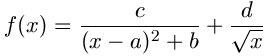
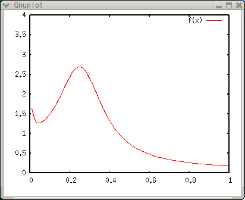
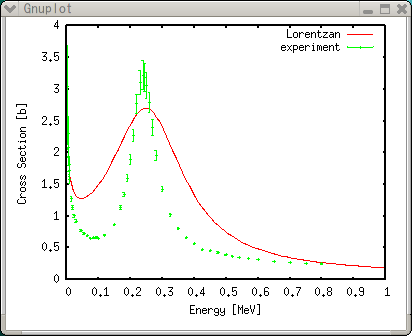
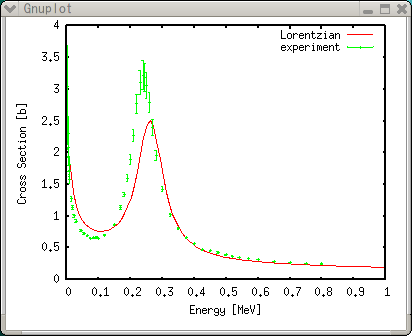
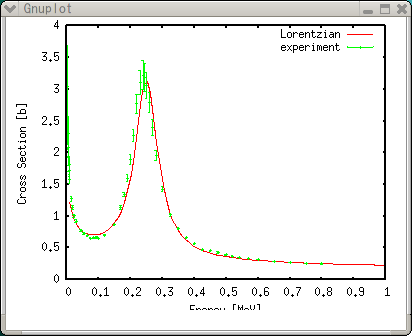
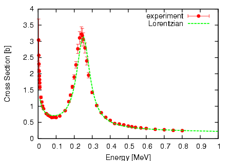

<!DOCTYPE HTML PUBLIC "-//W3C//DTD HTML 4.01 Transitional//EN">
<html lang="ja">
<head>
<title> gnuplot / intro / plotfunc </title>
<!-- Generated 2004/ 4/10  -->
<!-- $Id: plotfunc.html,v 1.4 2004/12/17 07:34:07 kawano Exp $ -->
<meta http-equiv="content-type" content="text/html;charset=iso-2022-jp">
<link rel="stylesheet" href="../style-new.css" type="text/css">
</head>
<body>

<table width="100%" border="0" cellpadding="0" cellspacing="0">
<tr><td bgcolor="#cccc90" width="320">
    <div align="left">
    <a href="../index.html">
    
    </a></div></td>
    <td bgcolor="#cccc90">
      <div align="center"><h3> - not so Frequently Asked Questions - </h3> </div>
      <div class="update"> update 2004/8/31 </div>
    </td>
</tr>
<tr><td bgcolor="#fae8ba"></td>
    <td bgcolor="#fae8ba"><div class="navi"> 
<a href="../index.html">          HOME </a> |
                                  INTRODUCTION |
<a href="../general.html">        INFORMATION </a> |
<a href="../gallery/index.html">  GALLERY </a> |
<a href="plotfunc-e.html">        ENGLISH </a>
</div></td></tr>
</table>
<hr class="topsep">


<table width="100%" border="0" cellpadding="0" cellspacing="0">
<tr><td id="menu">
 <p> <a href="index.html">   gnuplot$BF~Lg(B  </a></p>
 <ul>
  <li> <a href="basic.html">   $B4pK\$N4pK\JT(B  </a>
  <li> <a href="plotcalc.html">$B?tCM7W;;JT(B </a>
  <li> <a href="plotexp.html"> $B<B83%G!<%?JT(B </a>
  <li> <a href="plotfunc.html">$B4X?tI=<(JT(B </a>
   <ul>
     <li> <a href="plotfunc.html#function"> $B4X?t$NDj5A(B </a>
     <li> <a href="plotfunc.html#value">    $B4X?tCM(B </a>
     <li> <a href="plotfunc.html#fit">      $B:G>.<+>hK!(B </a>
     <li> <a href="plotfunc.html#done">     Postscript$B$G=PNO(B </a>
   </ul>
  <li> <a href="working.html"> $B@83hJT(B </a>
  <li> <a href="style.html">   $B%9%?%$%k0lMw(B </a>
 </ul>
</td>

<td id="content">


<h1><a name="top"> gnuplot $BF~Lg(B --- $B4X?tI=<(JT(B </a></h1>


<h2><a name="function">$B4X?t$NDj5A(B </a></h2>

<p> $B<0$G=q$1$k$h$&$J4X?t$G$"$l$P!$(Bgnuplot$B$O$=$N<0$r7W;;$7$FI=<($9$k$3$H(B
     $B$,$G$-$^$9!%!V<0$G=q$1$k!W$H$$$&$N$O!$Nc$($P(Bf(x)=a*x+b $B$N$h$&$J7A$G(B
     $B=q$1$k$3$H$rI=$7!$HyJ,$d@QJ,$J$I$r4^$`$b$N$O(Bgnuplot$B$@$1$G$O7W;;$G$-(B
     $B$^$;$s!%(Bgnuplot$B$O;03Q4X?t$d(BBessel$B4X?t!$(BGamma$B4X?tEy!$B?$/$N4X?t$rFb(B
     $BIt$K;}$C$F$*$j!$$=$l$i<+?H!$$"$k$$$O$=$l$i$rAH$_9g$o$;$?%0%i%U$rI=(B
     $B<($9$k$3$H$,$G$-$^$9!%(B</p>

<p> $B4X?t$N%0%i%U$=$N$b$N$rMxMQ$9$k$3$H$O(B($B?t3X$N<x6HL\E*0J30$K$O(B)$B>/$J$$$H(B
     $B;W$$$^$9(B($B2?$+$"$k$+$b$7$l$^$;$s!%$"$C$?$i65$($F$/$@$5$$(B)$B!%(Bgnuplot$B$N(B
     $B4X?t5!G=$N0RNO$,:G$bH/4x$5$l$k$N$O!$%G!<%?$X$N4X?tEv$F$O$a(B($B%G!<%?(B
     $B%U%#%C%F%#%s%0(B)$B!$$D$^$j:G>.<+>hK!$G$9!%<B83%G!<%?$r!$D>@~Ey$NC1=c$J(B
     $B2r@O6J@~$G6a;w$9$k$3$H$,$7$P$7$P$"$j$^$9$,!$(Bgnuplot$B$r;H$($PHs@~7A4X(B
     $B?t$NEv$F$O$a$b4JC1$K9T$&$3$H$,$G$-$^$9!%$3$N>O$G$O4X?t$NDj5A$NJ}K!(B
     $B$H!$$=$N4X?t$K4^$^$l$k%Q%i%a!<%?$KBP$9$k:G>.<+>hK!$r@bL@$7$^$9!%(B
     </p>

<p> $B<!<0$GI=$5$l$k!$(BLorentz$B7?4X?t$H(B 1/sqrt(x) $B$NOB$N4X?t$rI=<($7$F$_$^$9!%(B
     $B<0$K4^$^$l$k(Ba,b,c,d$B$N(B4$B$D$NJQ?t$O!$<B83%G!<%?$+$i5a$a$i$l$k$b$N$H$7(B
     $B$^$9!%(B</p>

<div align="center"></div>

<p> gnuplot$B$G4X?t$rDj5A$9$k$K$O!$(BFortran$B$d(BC$B$J$I$N%W%m%0%i%_%s%0$HA4$/F1(B
     $B$8$h$&$K<0$r=q$-$^$9!%2<$NNc$N(B
     <tt>f(x)=c/((x-a)*(x-a)+b)+d/sqrt(x)</tt> $B$,!$>e$N4X?t$rDj5A$7$F$$(B
     $B$kItJ,$G$9!%(B<tt> (x-a)</tt>$B$N(B2$B<+>h$NItJ,$O!$(BFortran$BIw$K(B<tt>
     (x-a)**2 </tt>$B$H=q$/$3$H$b$G$-$^$9!%JQ?t(B a,b,c,d $B$OG$0U$G$9$,!$$H$j(B
     $B$"$($:E,Ev$J?tCM$rM?$($F$$$^$9!%(B</p>

<pre class="sample">
gnuplot&gt; a=0.25
gnuplot&gt; b=0.02
gnuplot&gt; c=0.05
gnuplot&gt; d=0.1
gnuplot&gt; f(x)=c/((x-a)*(x-a)+b)+d/sqrt(x)
gnuplot&gt; set xrange [0:1]
gnuplot&gt; set yrange [0:4]
gnuplot&gt; plot f(x)
</pre>

<div align="center"></div>


<div class="top"><a href="plotfunc.html#top"></a></div>
<h2><a name="value">$B4X?tCM$r5a$a$k(B</a></h2>

<p> gnuplot$B$O%f!<%6$,Dj5A$7$?<0$rFbIt$G7W;;$7$^$9$,!$%0%i%U$rI=<($9$k$@$1$G$J$/!$(B
     $B?tCM$rD>@\I=<($9$k$3$H$b$G$-$^$9!%$"$k(BX$B:BI8$NCM$r5a$a$k$K$O!$(B<tt>print</tt>
     $B%3%^%s%I$rMQ$$$^$9!%<0$K4^$^$l$k%Q%i%a!<%?(B(a,b,c,d)$B$rJQ$($l$P!$4X?tCM$b(B
     $BJQ2=$7$^$9!%$J$*!$7W;;$OG\@:EY$G9T$o$l$^$9!%(B</p>

<pre class="sample">
gnuplot&gt; print f(0.25)
2.7
gnuplot&gt; print f(0.4)
1.33458447124371
gnuplot&gt; a=0.4
gnuplot&gt; print f(0.4)
2.65811388300842
</pre>

<p> $B7W;;$5$l$?4X?tCM$r%9%W%l%C%I%7!<%HEy$K<h$j9~$s$GMxMQ$7$?$$$3$H$b$"$j(B
     $B$^$9!%?tCM$rI=$K$7$F=PNO$7$?$$$J$i!$FC<l$J(Bterminal$B!$(B<tt> table
     </tt> $B$rMQ$$$^$9!%(B<tt> set output </tt>$B$G%U%!%$%k$r;XDj$9$l$P!$(B
     $B7W;;7k2L$O$=$N%U%!%$%k$K=q$-9~$^$l$^$9!%(B</p>

<pre class="sample">
gnuplot&gt; set term table
Terminal type set to 'table'
gnuplot&gt; plot f(x)
#Curve 0, 100 points
#x y type
0 0 u
0.010101 1.63972 i
0.020202 1.39031 i
0.030303 1.30688 i
   ....

0.979798 0.191506 i
0.989899 0.188622 i
1 0.185837 i

gnuplot&gt; set output "calc.plt"
gnuplot&gt; replot
</pre>


<div class="top"><a href="plotfunc.html#top"></a></div>
<h2><a name="fit">$B:G>.<+>hK!$G%Q%i%a!<%?$r5a$a$k(B</a></h2>

<p> $B%Q%i%a!<%?(B a,b,c,d$B$KBP$7!$<B83%G!<%?$K4p$E$$$F:GE,CM$r5a$a$^$9!%%G!<%?(B
$B$O%U%!%$%k(B exp.dat $B$KMQ0U$7$F$*$-$^$9!%(B</p>

<pre class="file">
 2.5000E-03 3.0420E+00 6.47E-01
 3.5000E-03 2.5700E+00 4.37E-01
 4.5000E-03 2.3020E+00 2.53E-01
   ...

 7.0000E-01 2.7420E-01 2.14E-03
 7.5000E-01 2.5680E-01 1.81E-03
 8.0000E-01 2.4630E-01 1.59E-03
</pre>

<p> $B%G!<%?%U%!%$%k$K$O!$(B(x,y,z)$B$NAH$,(B1$B9T$K=q$+$l$F$$$^$9!%(BX,Y$B:BI8$K2C$((B
     $B$F!$(BY$B$N8m:9(BZ$B$,(B3$B%+%i%`L\$KM?$($i$l$F$$$^$9!%8m:9$O@dBP8m:9$G!$%G!<%?(B
     Y$B$HF1$8C10L$r;}$A$^$9!%Nc$($P!$>e$N(B1$B9TL\$G!$(BY$B$,(B3.04cm$B$J$i!$8m:9$O(B
     0.647cm$B$H$$$C$?6q9g$G$9!%8m:9$N5U?t$,!$3F%G!<%?E@$N=E$_$H$J$j$^$9!%(B
     $B8m:9$,L5$1$l$P!$A4$F$N%G!<%?$OF1$8=E$_$r;}$D$b$N$H2r<a$5$l$^$9!%(B</p>

<p> $B$^$:$O%G!<%?$H4X?t$rF1;~$K=E$M$F%W%m%C%H$7$^$9!%(B<a href="plotexp.html">
     $B<B83%G!<%?JT(B</a>$B$d(B<a href="plotcalc.html">$B?tCM7W;;JT(B</a>$B$G=R$Y$?$h$&$K!$(B
     $B<4L>Ey$rE,59D4@0$7$F$$$^$9!%(B</p>

<pre class="sample">
gnuplot&gt; set xlabel "Energy [MeV]"
gnuplot&gt; set ylabel "Cross Section [b]"
gnuplot&gt; set xtics 0.1
gnuplot&gt; set ytics 0.5
gnuplot&gt; plot f(x) title "Lorentzan",\
&gt; "exp.dat" using 1:2:3 title "experiment" with yerrors
</pre>



<p> $B>e$G!$%Q%i%a!<%?(B a,b,c,d $B$OE,Ev$KM?$($?$H=q$-$^$7$?$,!$<B$O$3$N%G!<(B
     $B%?$KBP$7$FBgBN$N?tCM$r7h$a$?$b$N$G$9!%(Ba$B$O(BLorentz$B7?$N%T!<%/0LCV$KAj(B
     $BEv$7$^$9$,!$$3$N<B83%G!<%?$N?^$+$i!$BgBN(B0.25$B$H$7$^$7$?!%(Bb$B$NJ?J}:,$O(B
     $B%T!<%/$NI}$KBP1~$7$^$9!%?^$+$iI}$O(B0.1$BDxEY!$$=$NJ?J}$,(B0.01$B$G$9$,!$(B
     $B$A$g$C$HBg$-$a$K$7$F(B0.02$B$rF~$l$F$_$^$7$?!%(B</p>

<br clear="all">

<p> gnuplot$B$r;H$C$F:G>.<+>hK!$r$9$k$N$O$H$F$b4JC1$G$9!%(B<tt> fit </tt>$B%3(B
     $B%^%s%I$rMQ$$!$5a$a$?$$%Q%i%a!<%?$r(B <tt> via </tt>$B$H$$$&%*%W%7%g%s$K(B
     $BB3$1$F=q$/$@$1$G$9!%C"$7!$$3$N4X?t$N$h$&$JHs@~7A4X?t$r;H$C$FB?$/$N(B 
     $B%Q%i%a!<%?$rF1;~$K%U%#%C%H$K$O!$=i4|CM$KCm0U$9$kI,MW$,$"$j$^$9!%=i(B
     $B4|CM$,:GE,CM$+$iHs>o$KN%$l$F$$$k>l9g$O!$:G>.<+>h2r$r5a$a$k$N$,Fq$7(B
     $B$/$J$j$^$9!%>e$N?tCM$r$=$N$^$^;H$C$F:G>.<+>hK!$rE,MQ$9$k$H!$<!$N$h(B
     $B$&$K$J$j$^$9!%(B</p>

<pre class="sample">
gnuplot&gt; fit f(x) "exp.dat" using 1:2:3 via a,b,c,d
 
 
Iteration 0
WSSR        : 96618.1           delta(WSSR)/WSSR   : 0
delta(WSSR) : 0                 limit for stopping : 1e-05
lambda    : 1150.73
 
initial set of free parameter values

    ...

After 17 iterations the fit converged.
final sum of squares of residuals : 3341.93
rel. change during last iteration : -5.29173e-06
 
degrees of freedom (ndf) : 47
rms of residuals      (stdfit) = sqrt(WSSR/ndf)      : 8.43237
variance of residuals (reduced chisquare) = WSSR/ndf : 71.1049
 
Final set of parameters            Asymptotic Standard Error
=======================            ==========================
 
a               = 0.26191          +/- 0.005759     (2.199%)
b               = 0.00251445       +/- 0.0008358    (33.24%)
c               = 0.00541346       +/- 0.0009206    (17.01%)
d               = 0.182469         +/- 0.007329     (4.016%)
 
 
correlation matrix of the fit parameters:
 
               a      b      c      d
a               1.000
b               0.042  1.000
c              -0.229  0.783  1.000
d               0.210 -0.538 -0.768  1.000
gnuplot&gt; replot
</pre>

<div align="center"></div>

<p> $B$3$N$h$&$K!$(BY$B$NCM$,>.$5$$ItJ,0J30$O%U%#%C%F%#%s%0$,$"$^$jNI$/$"$j$^$;$s!%(B
$B$3$l$ODj5A$7$?%U%#%C%F%#%s%04X?t$,!$$3$N%G!<%?$KBP$7$F$"$^$jNI$/$J$+$C$?$3$H$K(B
$B5/0x$7$^$9!%%T!<%/$N7A>u$O(BLorentzian$B$GNI$5$=$&$G$9$N$G!$(B<tt> d/sqrt(x) </tt>$B$NItJ,(B
$B$r!$?7$7$$%Q%i%a!<%?(B e $B$r;H$C$F(B <tt> d*x**e </tt>$B$N$h$&$K=$@5$7!$$=$N:GE,CM$r(B
gnuplot$B$G5a$a$F$_$^$7$g$&!%(Be$B$N=i4|CM$O(B-0.5$B$H$7$F$*$-$^$9!%(B</p>


<pre class="sample">
gnuplot&gt; e=-0.5
gnuplot&gt; f(x)=c/((x-a)*(x-a)+b)+d*x**e
gnuplot&gt; fit f(x) "exp.dat" using 1:2:3 via a,b,c,d,e

     ...
Final set of parameters            Asymptotic Standard Error
=======================            ==========================
 
a               = 0.25029          +/- 0.002106     (0.8412%)
b               = 0.00197707       +/- 0.0002747    (13.89%)
c               = 0.00550098       +/- 0.0003662    (6.657%)
d               = 0.21537          +/- 0.003743     (1.738%)
e               = -0.358371        +/- 0.0115       (3.208%)
 
 
correlation matrix of the fit parameters:
 
               a      b      c      d      e
a               1.000
b               0.021  1.000
c              -0.078  0.788  1.000
d              -0.110 -0.384 -0.500  1.000
e              -0.304  0.198  0.335  0.381  1.000
gnuplot&gt; replot
</pre>



<p> Best fit$B$^$G$O$"$H0lJb$H$$$C$?46$8$G$9$M!%(B<tt>a=0.24</tt>$B$/$i$$$K8GDj$7$F(B
$B$*$$$F!$(B<tt> via b,c,d,e</tt>$B$N$h$&$K(B a $B0J30$r%5!<%A$9$k$H!$8+$?L\$O$b$&>/$7(B
$BNI$/$J$j$^$9$,!$&V(B^2$B$OBg$-$/$J$C$F$7$^$$$^$9!%(B</p>
<br clear="all">


<div class="top"><a href="plotfunc.html#top"></a></div>
<h2><a name="done">Postscript$B$G=PNO$9$k(B</a></h2>

<p> <a href="plotexp.html">$B<B83%G!<%?JT(B</a>$B$N$h$&$K!$=PMh>e$,$C$??^$r(B
Postscript$B$K$7$^$9!%<B83%G!<%?$K$O<B@~$G(B7$BHV$N%7%s%\%k!{$r3d$jEv$F!$4X?t$K$O(B
$BB@$a$NE@@~$r3d$jEv$F$^$9!%(B</p>

<pre class="sample">
gnuplot&gt; set linestyle 1 lt 1 pt 7
gnuplot&gt; set linestyle 2 lt 2 lw 3
gnuplot&gt; set size 0.6,0.6
gnuplot&gt; set term postscript eps enhanced color
Terminal type set to 'postscript'
Options are 'eps enhanced color dashed defaultplex "Helvetica" 14'
gnuplot&gt; set output "exp.ps"
gnuplot&gt; plot"exp.dat" using 1:2:3 title "experiment" with yerrors ls 1,\
&gt;        f(x) title "Lorentzan" with line ls 2
</pre>

<p>[3.8/4.0] Ver.3.8$B0J9_$N(Bgnuplot$B$N>l9g$O!$@~<o$r0J2<$N$h$&$KDj5A$7$^$9!%(B</p>
<pre class="sample">
gnuplot&gt; set style line 1 lt 1 pt 7
gnuplot&gt; set style line 2 lt 2 lw 3
</pre>

<div align="center"></div>
<br clear="all">


<div class="top"><a href="plotfunc.html#top"></a></div>
</td></tr></table>
<hr class="topsep">

</body>
</html>

